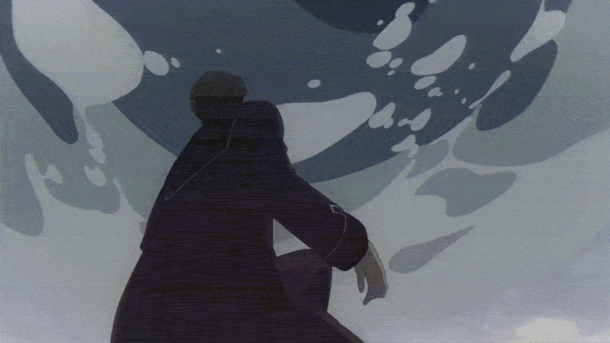

A Magia da
Programação
Uma jornada pelo conhecimento
A Magia da Programação
No anime Frieren: Beyond Journey's End, existe uma ideia que me marcou profundamente: a magia é um mundo de imaginação. Um mago só consegue lançar um feitiço se antes conseguir visualizá-lo em sua mente. Se ele não consegue imaginar aquilo acontecendo, então a magia simplesmente não acontece. Quando ouvi isso pela primeira vez, percebi o quanto isso parece com a programação.
Programar também é um exercício de imaginação. Antes de existir na tela, antes de virar código, tudo começa na mente do programador. Cada sistema, cada função, cada solução nasce primeiro como uma ideia que alguém conseguiu imaginar.
No anime, existe uma maga muito antiga chamada Frieren. Ela vive em uma era de paz, muito tempo depois de uma grande guerra. Nesse mundo, muitas pessoas sabem usar magia, mas a maioria utiliza magias simples: elas colocam mana em algo que já existe e apenas manipulam aquilo.
Por exemplo, em vez de criar água do nada, um mago coloca mana na água e a controla. É muito mais fácil manipular algo que já existe do que criar algo completamente novo. Criar algo do zero exige mais energia, mais conhecimento e um domínio muito maior da magia. Na programação acontece exatamente a mesma coisa.

Hoje temos muitas ferramentas, inclusive inteligência artificial, que nos ajudam a gerar códigos rapidamente. Muitas vezes é muito mais fácil pegar algo pronto e apenas ajustar ou modificar. Isso realmente facilita o trabalho. Mas existe um risco significativo. Quando fazemos isso o tempo todo, acabamos deixando de aprender os fundamentos — aquilo que realmente sustenta a magia da programação. É muito mais fácil manipular algo pronto do que construir algo do zero. Mas é justamente no processo de criar do zero que aparece o verdadeiro conhecimento.
Existe uma cena inesquecível no anime. (Alerta de spoiler.) Em um momento da história, Frieren e Fern precisam lutar contra um clone da própria Frieren. Durante uma batalha, quando o clone está prestes a ser derrotado, ele lança um feitiço completamente diferente de tudo que já tinha sido visto. Não era apenas mais uma magia. Era algo que representava o fundamento da magia.
Fern, já imobilizada, quase sem forças para lutar, observa aquilo com os olhos brilhando, completamente impressionada, e diz: "Então… essa é a grandeza da magia."

Quando eu vi meu professor criar um sistema do zero, aplicando todos os conceitos da programação orientada a objetos, sem usar IA, sem copiar código, apenas usando conhecimento, lógica e experiência… eu senti exatamente a mesma coisa. Meus olhos brilharam como os da Fern naquele momento. Porque ali eu não estava vendendo apenas código. Eu estava vendendo domínio. Eu estava vendendo os fundamentos em ação. E é exatamente esse tipo de conhecimento que eu busco.
Claro que hoje as ferramentas de IA tornam tudo mais rápido e mais fácil. Elas são incríveis e fazem parte do nosso tempo. Mas existe algo que nenhuma ferramenta pode substituir: uma jornada de aprendizagem. Porque, no fim, como a própria Frieren diz: "O maior prazer da magia está na busca que fazemos por ela." E talvez seja exatamente isso que torna tanto a magia quanto a programação algo tão fascinante: a busca pelo conhecimento que ainda não dominamos.
- Rubens Gabriel